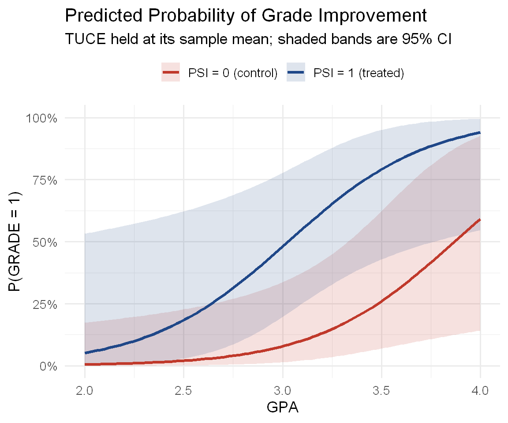
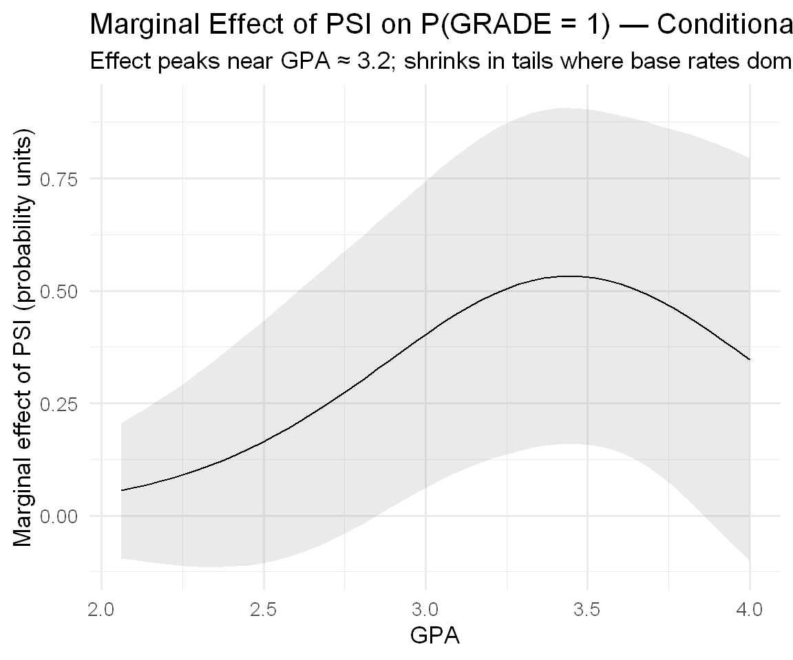
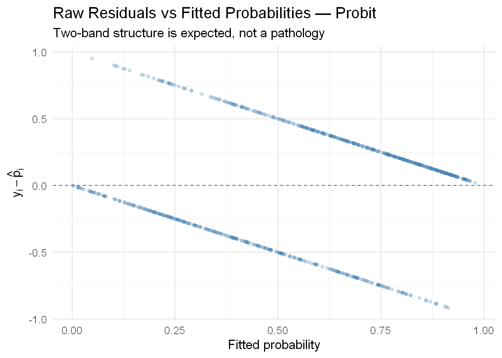
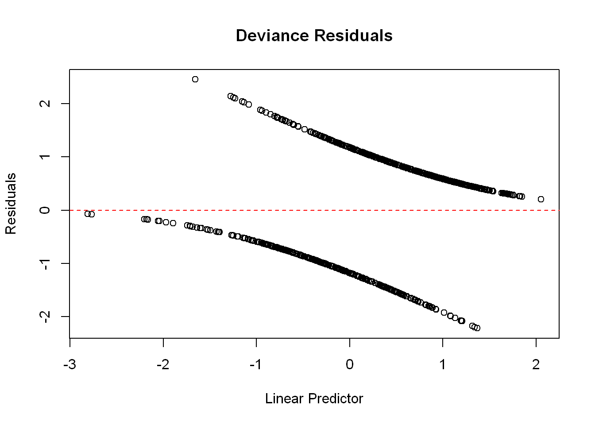
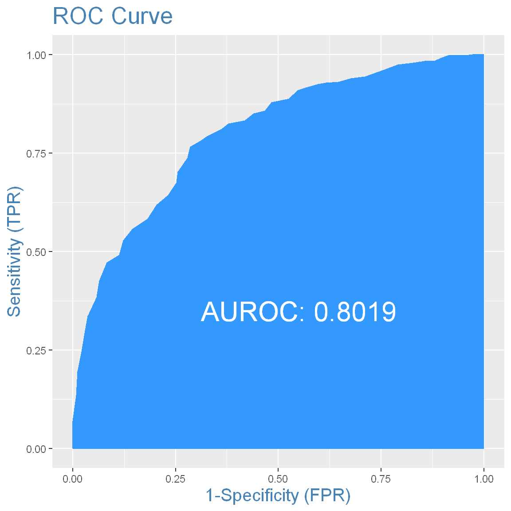
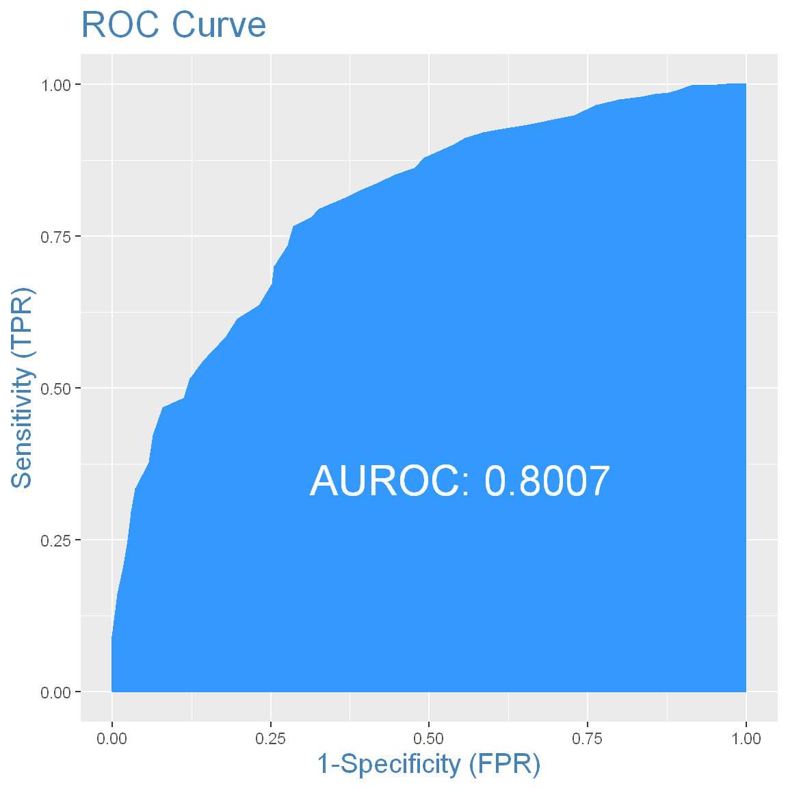
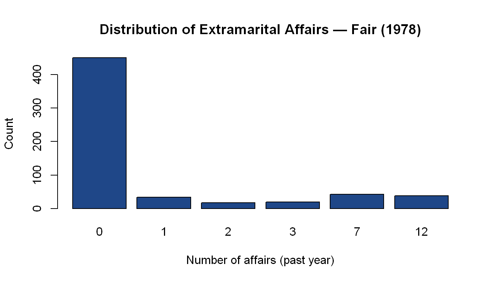

rm(list = ls())
options(
repr.plot.width = 8,
repr.plot.height = 6,
repr.plot.res = 150,
warn = -1
)
packages <- c(
"wooldridge", # Mroz dataset
"marginaleffects", # APE, PEA, and conditional ME plots via avg_slopes()/slopes()
"modelsummary", # Regression tables
"knitr", # Table formatting
"ggplot2", # Plotting
"gridExtra", # Multi-panel plots
"car", # linearHypothesis
"InformationValue", # Confusion matrix and ROC
"MASS", # polr() for ordered probit
"AER", # Affairs dataset
"mlogit", # Multinomial logit
"dplyr", # Data manipulation
"tidyr" # pivot_longer for ordered probit plots
)
invisible(lapply(packages, function(pkg) {
if (!require(pkg, character.only = TRUE, quietly = TRUE)) {
install.packages(pkg, repos = "https://cloud.r-project.org")
require(pkg, character.only = TRUE, quietly = TRUE)
}
}))Binary Choice Models
Marginal Effects, Inference, Model Fit, Extensions
NYU - Applied Statistics and Econometrics 2
What This Notebook Covers
This notebook picks up exactly where Lecture 1 ended. We have estimated probit and logit models on the Mroz labor force participation data. We know the coefficients are not probability changes. The full toolkit — marginal effects, hypothesis testing, model evaluation, and generalization to richer outcome structures — is what this notebook builds.
Along the way we cover:
- Computing and interpreting average partial effects (APE) and partial effects at the average (PEA)
- When PEA and APE diverge: Greene’s Example 17.3 (Spector and Mazzeo)
- Odds, log-odds, and how to translate logit coefficients into probability changes
- Testing hypotheses after MLE: z-tests, likelihood ratio tests, and linear restrictions
- Measuring fit without R²: pseudo-R², confusion matrices, and the ROC curve
- Ordered probit: one latent variable, multiple thresholds, and the bin-shift trap
- Multinomial logit: one utility per alternative, the IIA property, and the value of time
1 Setup
1.1 Load Packages and Data
1.2 Datasets
We work with three datasets across this notebook.
Mroz (1987) continues from Lecture 1. We fit the same probit and logit models so all results carry forward.
data("mroz", package = "wooldridge")
my.df <- data.frame(mroz)
equation <- inlf ~ nwifeinc + educ + exper + expersq + age + kidslt6 + kidsge6
LPM <- lm(equation, data = my.df)
probit_glm <- glm(equation, data = my.df, family = binomial(link = "probit"))
logit_glm <- glm(equation, data = my.df, family = binomial(link = "logit"))Fair (1978) — extramarital affairs. Used for the ordered probit example.
affairs <- read.csv(
"https://vincentarelbundock.github.io/Rdatasets/csv/AER/Affairs.csv"
)Spector and Mazzeo (1980) — Greene’s Example 17.3. Used to demonstrate when PEA and APE diverge substantially.
spector <- read.csv(
"http://www.stern.nyu.edu/~wgreene/Text/Edition7/TableF14-1.csv"
)
spector$PSI <- factor(spector$PSI)ModeCanada (1989) — transportation mode choice for business travelers. Used for the multinomial logit example.
data(ModeCanada)
mc.df <- data.frame(ModeCanada)
mc.df <- subset(mc.df, noalt == 4) # only cases with all 4 alternatives
mc.df$time <- with(mc.df, ivt + ovt) # total travel time
rownames(mc.df) <- seq_len(nrow(mc.df)) # reset index2 Part I: Marginal Effects
2.1 Why the Coefficients Are Not the Answer
Lecture 1 closed with a cliffhanger. We estimated the probit model and found that the education coefficient is 0.131. We said this is not a probability change. Let’s now be precise about what it is, what we actually want, and how to get it.
The probit model specifies:
\[P(y_i = 1 \mid \mathbf{x}_i) = \Phi(\mathbf{x}_i'\beta)\]
Differentiating with respect to \(x_k\) by the chain rule gives:
\[\frac{\partial P(y_i = 1 \mid \mathbf{x}_i)}{\partial x_k} = \phi(\mathbf{x}_i'\beta) \cdot \beta_k\]
where \(\phi(\cdot)\) is the standard normal PDF — the derivative of \(\Phi(\cdot)\).
Two things are immediately clear. First, the sign of the marginal effect is the sign of \(\beta_k\), since \(\phi(\cdot) > 0\) always. Second, the magnitude depends on \(\phi(\mathbf{x}_i'\beta)\), which varies across observations. The marginal effect is not a constant — it depends on where each individual sits on the latent index. The density \(\phi\) is highest at the center and falls toward zero in the tails, so the effect on probability is largest for individuals near the 50% decision margin and smallest for those who are nearly certain to work or nearly certain not to.
The probit coefficient for education is 0.131. A rough conversion at the midpoint uses \(\phi(0) \approx 0.399\):
# Two ways to translate the probit coefficient at the midpoint
beta_educ_probit <- coef(probit_glm)["educ"]
# Method 1: using the normal table directly — Phi(beta) - Phi(0)
cat("Phi(0.1309) - Phi(0):", round(pnorm(0.1309) - pnorm(0), 4), "\n")Phi(0.1309) - Phi(0): 0.0521 # Method 2: phi(0) * beta_k — the derivative approximation
cat("phi(0) × beta_educ:", round(dnorm(0) * beta_educ_probit, 4), "\n")phi(0) × beta_educ: 0.0522 Both give approximately 5.2 percentage points — the probability gain from one additional year of education for a woman right at the 50% participation margin.
2.2 Logit: Odds, Log-Odds, and the Divide-by-Four Rule
For logit, the link between coefficients and probability runs through odds. This is worth understanding carefully, because logit coefficients are reported in log-odds units and the connection to probability is less direct than in probit.
Probability → Odds → Log-odds:
If the probability of success is \(p\), the odds are \(p / (1-p)\) and the log-odds are \(\log(p/(1-p))\). The logit model assumes the log-odds are linear in \(\mathbf{x}\):
\[\log\frac{P(y=1)}{P(y=0)} = \mathbf{x}'\beta\]
The table below shows how these three quantities relate to each other:
p_vals <- c(0.001, 0.01, 0.15, 0.20, 0.25, 0.30, 0.35, 0.40, 0.45,
0.50, 0.55, 0.60, 0.65, 0.70, 0.75, 0.80, 0.85, 0.90, 0.999)
odds_table <- data.frame(
p = p_vals,
odds = round(p_vals / (1 - p_vals), 3),
logodds = round(log(p_vals / (1 - p_vals)), 3)
)
kable(odds_table,
col.names = c("Probability p", "Odds p/(1−p)", "Log-odds log(p/(1−p))"),
caption = "Mapping Between Probability, Odds, and Log-Odds")| Probability p | Odds p/(1−p) | Log-odds log(p/(1−p)) |
|---|---|---|
| 0.001 | 0.001 | -6.907 |
| 0.010 | 0.010 | -4.595 |
| 0.150 | 0.176 | -1.735 |
| 0.200 | 0.250 | -1.386 |
| 0.250 | 0.333 | -1.099 |
| 0.300 | 0.429 | -0.847 |
| 0.350 | 0.538 | -0.619 |
| 0.400 | 0.667 | -0.405 |
| 0.450 | 0.818 | -0.201 |
| 0.500 | 1.000 | 0.000 |
| 0.550 | 1.222 | 0.201 |
| 0.600 | 1.500 | 0.405 |
| 0.650 | 1.857 | 0.619 |
| 0.700 | 2.333 | 0.847 |
| 0.750 | 3.000 | 1.099 |
| 0.800 | 4.000 | 1.386 |
| 0.850 | 5.667 | 1.735 |
| 0.900 | 9.000 | 2.197 |
| 0.999 | 999.000 | 6.907 |
Note how the log-odds achieve our goal: probability is confined to \((0,1)\), odds to \((0, \infty)\), but log-odds range over the entire real line — exactly what we need to model with a linear index.
Translating logit coefficients: A one-unit increase in \(x_k\) changes the log-odds by \(\hat\beta_k\), which multiplies the odds by \(e^{\hat\beta_k}\). To convert to a probability change, the modelsummary package can report exponentiated (odds-scale) coefficients:
# Log-odds scale (raw output)
modelsummary(logit_glm,
title = "Logit — Log-Odds Scale",
fmt = "%.3f",
stars = TRUE,
exponentiate = FALSE,
gof_omit = ".*")| (1) | |
|---|---|
| + p < 0.1, * p < 0.05, ** p < 0.01, *** p < 0.001 | |
| (Intercept) | 0.425 |
| (0.860) | |
| nwifeinc | -0.021* |
| (0.008) | |
| educ | 0.221*** |
| (0.043) | |
| exper | 0.206*** |
| (0.032) | |
| expersq | -0.003** |
| (0.001) | |
| age | -0.088*** |
| (0.015) | |
| kidslt6 | -1.443*** |
| (0.204) | |
| kidsge6 | 0.060 |
| (0.075) | |
# Odds scale (exponentiated) — note: SEs are not adjusted, report t-statistics
modelsummary(logit_glm,
title = "Logit — Odds Scale (Exponentiated Coefficients)",
fmt = "%.3f",
stars = FALSE,
exponentiate = TRUE,
statistic = "t = {statistic}",
gof_omit = ".*")| (1) | |
|---|---|
| (Intercept) | 1.530 |
| t = 0.495 | |
| nwifeinc | 0.979 |
| t = -2.535 | |
| educ | 1.248 |
| t = 5.091 | |
| exper | 1.229 |
| t = 6.422 | |
| expersq | 0.997 |
| t = -3.104 | |
| age | 0.916 |
| t = -6.040 | |
| kidslt6 | 0.236 |
| t = -7.090 | |
| kidsge6 | 1.062 |
| t = 0.804 |
The exponentiated education coefficient is 1.248: one more year of education multiplies the odds of labor force participation by a factor of 1.248. To convert this to a probability change at \(p = 0.5\) (where odds = 1):
# At p = 0.5 (odds = 1), new odds = 1 × 1.248 = 1.248
new_odds <- 1.248
cat("Probability change at p = 0.5:",
round(new_odds / (1 + new_odds) - 0.5, 4), "\n")Probability change at p = 0.5: 0.0552 # Or equivalently: divide logit coefficient by 4 (the midpoint rule)
cat("Divide-by-four approximation:",
round(coef(logit_glm)["educ"] / 4, 4), "\n")Divide-by-four approximation: 0.0553 Both give approximately 5.5 percentage points — consistent with the probit result of 5.2. The raw coefficients (0.131 vs 0.221) looked very different because they were on different scales. The probability impacts are nearly identical.
2.3 PEA vs APE: Two Summary Statistics
Partial Effect at the Average (PEA): Plug in the sample means of all covariates.
\[\text{PEA}_k = \phi(\bar{\mathbf{x}}'\hat\beta) \cdot \hat\beta_k\]
The slopes() function with newdata = "mean" computes this cleanly, evaluating each variable at its sample mean as stored in the data (so expersq is set to mean(expersq), not to mean(exper)²):
# PEA via slopes() evaluated at sample means
pea_probit <- slopes(probit_glm, newdata = "mean")
pea_logit <- slopes(logit_glm, newdata = "mean")
cat("--- Probit PEA (at sample means) ---\n")--- Probit PEA (at sample means) ---print(pea_probit[, c("term", "estimate", "std.error", "statistic", "p.value")])
Term Estimate Std. Error z Pr(>|z|)
age -0.01959 0.003043 -6.439 <0.001
educ 0.04853 0.009545 5.084 <0.001
exper 0.04573 0.006937 6.592 <0.001
expersq -0.00070 0.000222 -3.157 0.0016
kidsge6 0.01335 0.016423 0.813 0.4164
kidslt6 -0.32189 0.041000 -7.851 <0.001
nwifeinc -0.00446 0.001835 -2.429 0.0152# APE via avg_slopes()
ape_probit <- avg_slopes(probit_glm)
ape_logit <- avg_slopes(logit_glm)
cat("--- Probit APE (average across all observations) ---\n")--- Probit APE (average across all observations) ---print(as.data.frame(ape_probit)[, c("term", "estimate", "std.error", "statistic", "p.value")]) term estimate std.error statistic p.value
1 age -0.015895665 0.0023586345 -6.7393507 1.590960e-11
2 educ 0.039370095 0.0072652622 5.4189503 5.994998e-08
3 exper 0.037097345 0.0051682496 7.1779320 7.077373e-13
4 expersq -0.000567546 0.0001770818 -3.2049942 1.350652e-03
5 kidsge6 0.010828887 0.0132230303 0.8189414 4.128198e-01
6 kidslt6 -0.261153464 0.0319024737 -8.1859942 2.700648e-16
7 nwifeinc -0.003616176 0.0014696924 -2.4604982 1.387443e-02The APE and PEA for education are nearly identical (around 0.051) because the Mroz sample sits comfortably near the center of the distribution — a convenient feature of this particular dataset. We will see shortly that in other settings they can diverge substantially.
2.4 Comparing APEs Across Models
Once we convert to probability units, probit and logit agree — and both converge closely on the LPM coefficients.
# Build each set of estimates as a named vector keyed on term,
# then merge on term so row order is never assumed.
ape_lpm <- as.data.frame(avg_slopes(LPM))
ape_probit <- as.data.frame(avg_slopes(probit_glm))
ape_logit <- as.data.frame(avg_slopes(logit_glm))
pea_probit <- as.data.frame(slopes(probit_glm, newdata = "mean"))
pea_logit <- as.data.frame(slopes(logit_glm, newdata = "mean"))
lpm_coef_df <- data.frame(
term = names(coef(LPM))[-1],
LPM_coef = round(coef(LPM)[-1], 3)
)
ape_compare <- Reduce(
function(a, b) merge(a, b, by = "term", all = TRUE),
list(
lpm_coef_df,
setNames(pea_probit[, c("term","estimate")], c("term","Probit_PEA")),
setNames(ape_probit[, c("term","estimate")], c("term","Probit_APE")),
setNames(pea_logit[ , c("term","estimate")], c("term","Logit_PEA")),
setNames(ape_logit[ , c("term","estimate")], c("term","Logit_APE"))
)
)
ape_compare[, -1] <- round(ape_compare[, -1], 3)
kable(
ape_compare,
col.names = c("Variable", "LPM Coef",
"Probit PEA", "Probit APE",
"Logit PEA", "Logit APE"),
caption = "LPM Coefficients vs Probit/Logit PEA and APE — all in probability units"
)| Variable | LPM Coef | Probit PEA | Probit APE | Logit PEA | Logit APE |
|---|---|---|---|---|---|
| age | -0.016 | -0.020 | -0.016 | -0.020 | -0.016 |
| educ | 0.038 | 0.049 | 0.039 | 0.050 | 0.039 |
| exper | 0.039 | 0.046 | 0.037 | 0.047 | 0.037 |
| expersq | -0.001 | -0.001 | -0.001 | -0.001 | -0.001 |
| kidsge6 | 0.013 | 0.013 | 0.011 | 0.014 | 0.011 |
| kidslt6 | -0.262 | -0.322 | -0.261 | -0.327 | -0.258 |
| nwifeinc | -0.003 | -0.004 | -0.004 | -0.005 | -0.004 |
The differences that looked dramatic in the raw coefficient table — probit’s \(-0.868\) versus LPM’s \(-0.262\) for kidslt6 — almost completely disappear once we convert to probability units. The models disagree about scale, not about substance.
2.5 Marginal Effects at Specific Covariate Values
APE and PEA are both averages. Sometimes we want the marginal effect for a specific, substantively meaningful individual. The slopes() function handles this directly.
# Marginal effect of education for two hypothetical women
profiles <- data.frame(
nwifeinc = c(20.13, 20.13),
educ = c(12, 16),
exper = c(10.6, 10.6),
expersq = c(10.6^2, 10.6^2),
age = c(42, 42),
kidslt6 = c(0, 0),
kidsge6 = c(1, 1)
)
me_profiles <- slopes(probit_glm, newdata = profiles, variables = "educ")
me_profiles[, c("educ", "estimate", "std.error", "conf.low", "conf.high")]
Estimate Std. Error CI low CI high
0.0458 0.00920 0.0278 0.0639
0.0306 0.00371 0.0233 0.0379A woman with 12 years of education who sits near the center of the distribution has a larger marginal return to an additional year of schooling than a college-educated woman whose participation probability is already near 0.9.
2.6 When PEA and APE Diverge: Greene’s Example 17.3
The Mroz dataset was convenient — PEA and APE were nearly identical because the sample is concentrated near the centre of the probability distribution. Greene (2018, Example 17.3) uses a smaller, more polarised dataset to make the divergence visible.
The Spector and Mazzeo (1980) data contains 32 undergraduate economics students. The binary outcome is GRADE — whether the student’s grade in an intermediate macroeconomics course improved relative to their principles course. The covariates are GPA (grade point average), TUCE (a pretest score), and PSI (a binary indicator of whether the student was exposed to the Personalized System of Instruction, a new teaching method being evaluated in the study).
cat("Sample size:", nrow(spector), "\n")Sample size: 32 cat("Grade improvement rate:", round(mean(spector$GRADE), 3), "\n")Grade improvement rate: 0.344 datasummary_skim(spector[, c("GPA", "TUCE", "GRADE")], output = "default")| Unique | Missing Pct. | Mean | SD | Min | Median | Max | Histogram | |
|---|---|---|---|---|---|---|---|---|
| GPA | 29 | 0 | 3.1 | 0.5 | 2.1 | 3.1 | 4.0 | |
| TUCE | 14 | 0 | 21.9 | 3.9 | 12.0 | 22.5 | 29.0 | |
| GRADE | 2 | 0 | 0.3 | 0.5 | 0.0 | 0.0 | 1.0 |
# Fit LPM, logit, and probit
eq_sp <- GRADE ~ GPA + TUCE + PSI
lpm_sp <- lm(eq_sp, data = spector)
logit_sp <- glm(eq_sp, data = spector, family = binomial(link = "logit"))
probit_sp <- glm(eq_sp, data = spector, family = binomial(link = "probit"))
modelsummary(
list(LPM = lpm_sp, Logit = logit_sp, Probit = probit_sp),
fmt = "%.3f",
stars = TRUE,
gof_omit = ".*",
title = "Spector-Mazzeo (1980) — Grade Improvement Models"
)| LPM | Logit | Probit | |
|---|---|---|---|
| + p < 0.1, * p < 0.05, ** p < 0.01, *** p < 0.001 | |||
| (Intercept) | -1.498** | -13.021** | -7.452** |
| (0.524) | (4.931) | (2.572) | |
| GPA | 0.464** | 2.826* | 1.626* |
| (0.162) | (1.263) | (0.690) | |
| TUCE | 0.010 | 0.095 | 0.052 |
| (0.019) | (0.142) | (0.081) | |
| PSI1 | 0.379* | 2.379* | 1.426* |
| (0.139) | (1.065) | (0.587) | |
The PSI coefficient is large and positive in all three models. But by how much does PSI exposure change the probability of grade improvement? The answer depends critically on whether we evaluate at the mean (PEA) or average across the sample (APE).
# PEA for logit — evaluate at sample means
pea_sp <- slopes(logit_sp, newdata = "mean")
cat("--- Logit PEA (at sample means) ---\n")--- Logit PEA (at sample means) ---print(pea_sp[, c("term", "estimate", "std.error", "p.value")])
Term Estimate Std. Error Pr(>|z|)
GPA 0.27076 0.1719 0.1153
PSI 0.45739 0.1811 0.0116
TUCE 0.00912 0.0138 0.5104# APE for logit — average across all 32 observations
ape_sp <- avg_slopes(logit_sp)
cat("--- Logit APE (averaged across sample) ---\n")--- Logit APE (averaged across sample) ---print(ape_sp[, c("term", "estimate", "std.error", "p.value")])
Term Estimate Std. Error Pr(>|z|)
GPA 0.3626 0.1094 <0.001
PSI 0.3575 0.1420 0.0118
TUCE 0.0122 0.0178 0.4927# Build via merge on term to avoid any positional alignment assumptions.
# Note: coef() returns "PSI1" for the factor dummy; slopes() returns "PSI".
# Standardise to "PSI" throughout.
lpm_sp_coefs <- data.frame(
term = c("GPA", "TUCE", "PSI"),
LPM_coef = round(coef(lpm_sp)[c("GPA", "TUCE", "PSI1")], 3)
)
pea_logit_sp <- as.data.frame(slopes(logit_sp, newdata = "mean"))
ape_logit_sp <- as.data.frame(avg_slopes(logit_sp))
pea_probit_sp <- as.data.frame(slopes(probit_sp, newdata = "mean"))
ape_probit_sp <- as.data.frame(avg_slopes(probit_sp))
comparison_sp <- Reduce(
function(a, b) merge(a, b, by = "term", all = TRUE),
list(
lpm_sp_coefs,
setNames(pea_logit_sp[ , c("term","estimate")], c("term","Logit_PEA")),
setNames(ape_logit_sp[ , c("term","estimate")], c("term","Logit_APE")),
setNames(pea_probit_sp[, c("term","estimate")], c("term","Probit_PEA")),
setNames(ape_probit_sp[, c("term","estimate")], c("term","Probit_APE"))
)
)
comparison_sp[, -1] <- round(comparison_sp[, -1], 3)
kable(
comparison_sp,
col.names = c("Variable", "LPM",
"Logit PEA", "Logit APE",
"Probit PEA", "Probit APE"),
caption = "Greene Table 17.1 (reproduced) — PEA vs APE comparison"
)| Variable | LPM | Logit PEA | Logit APE | Probit PEA | Probit APE |
|---|---|---|---|---|---|
| GPA | 0.464 | 0.271 | 0.363 | 0.298 | 0.361 |
| PSI | 0.379 | 0.457 | 0.358 | 0.465 | 0.374 |
| TUCE | 0.010 | 0.009 | 0.012 | 0.009 | 0.011 |
For PSI, the logit PEA is approximately 0.456 and the APE is approximately 0.358. This 10-percentage-point gap is not a rounding error — it is substantively meaningful and directly visible in the data.
Why do they diverge here when they didn’t in the Mroz data? Because PSI is a dummy variable, and its effect depends strongly on where a student sits on the GPA distribution. A student with a low GPA has a very low base probability of improving their grade regardless of PSI; one with a high GPA has a high base probability regardless. PSI only matters a lot for students in the middle. The PEA evaluates at the mean GPA — which happens to fall where PSI has a large effect. The APE averages over the full distribution, including the students at extremes where PSI matters less.
2.7 Plotting Predicted Probabilities by PSI Group
The disagreement between PEA and APE makes much more sense after looking at the response function directly. The plot below shows predicted probabilities as a function of GPA, separately for PSI = 0 and PSI = 1, with TUCE held at its sample mean.
plot_sp <- with(spector, data.frame(
GPA = rep(seq(2, 4, length.out = 100), 2),
TUCE = mean(TUCE),
PSI = factor(rep(0:1, each = 100))
))
plot_sp <- cbind(
plot_sp,
predict(logit_sp, newdata = plot_sp, type = "link", se.fit = TRUE)
)
plot_sp$PredProb <- plogis(plot_sp$fit)
plot_sp$LL <- plogis(plot_sp$fit - 1.96 * plot_sp$se.fit)
plot_sp$UL <- plogis(plot_sp$fit + 1.96 * plot_sp$se.fit)
ggplot(plot_sp, aes(x = GPA, y = PredProb, color = PSI, fill = PSI)) +
geom_ribbon(aes(ymin = LL, ymax = UL), alpha = 0.15, color = NA) +
geom_line(linewidth = 1.2) +
scale_color_manual(
values = c("0" = "#C0392B", "1" = "#1F4788"),
labels = c("0" = "PSI = 0 (control)", "1" = "PSI = 1 (treated)")
) +
scale_fill_manual(
values = c("0" = "#C0392B", "1" = "#1F4788"),
labels = c("0" = "PSI = 0 (control)", "1" = "PSI = 1 (treated)")
) +
scale_y_continuous(limits = c(0, 1), labels = scales::percent_format()) +
labs(
title = "Predicted Probability of Grade Improvement",
subtitle = "TUCE held at its sample mean; shaded bands are 95% CI",
x = "GPA",
y = "P(GRADE = 1)",
color = NULL,
fill = NULL
) +
theme_minimal(base_size = 13) +
theme(legend.position = "top")
The S-curves are separated most in the middle of the GPA range (roughly 2.8–3.5), where PSI exposure lifts the probability substantially. At GPA = 2.0, both groups have near-zero probability of improvement — PSI cannot help a student who is insufficiently prepared. At GPA = 4.0, both groups have near-one probability — PSI adds little for students who would improve regardless.
The PEA evaluates the PSI effect at the mean GPA (≈ 3.1), which is exactly the region of maximum PSI impact — so PEA overestimates the average effect. The APE averages over the full distribution of GPAs, capturing the diminished PSI effect in the tails, and gives a more representative answer.
2.8 Plotting Conditional Marginal Effects with plot_slopes()
The marginaleffects package provides plot_slopes() for a direct visualization of how the marginal effect of one variable changes across the range of another.
plot_slopes(
logit_sp,
variables = "PSI",
condition = "GPA"
) +
labs(
title = "Marginal Effect of PSI on P(GRADE = 1) — Conditional on GPA",
subtitle = "Effect peaks near GPA ≈ 3.2; shrinks in tails where base rates dominate",
x = "GPA",
y = "Marginal effect of PSI (probability units)"
) +
theme_minimal(base_size = 13)
This plot makes the PEA-APE wedge geometrically transparent. The marginal effect of PSI is not constant — it traces a bell-shaped curve over GPA, peaking near 3.2 (close to the sample mean) and declining toward zero at both extremes. The PEA is the height of this curve at the mean GPA. The APE is the area under this curve, divided by the width — a weighted average that gives less weight to the peak and more to the tails. Since the curve is asymmetric and the GPA distribution spreads into the tails, APE < PEA.
The practical lesson: whenever your sample contains a binary regressor or has predicted probabilities concentrated near 0 or 1, inspect the conditional marginal effect plot before reporting a single number. PEA and APE can tell genuinely different stories.
3 Part II: Inference
3.1 Testing Hypotheses After MLE
The MLE framework provides three complementary tools for testing hypotheses, which are exact analogues of the tools you already know from OLS.
The z-test is the probit/logit counterpart of the OLS t-test. Under standard regularity conditions, MLE estimators are asymptotically normal:
\[\frac{\hat\beta_k - \beta_k^0}{\widehat{\text{SE}}(\hat\beta_k)} \xrightarrow{d} N(0,1)\]
The standard error comes from the curvature of the log-likelihood at \(\hat\beta\) — specifically, from the square root of the corresponding diagonal element of the inverse Hessian. Software computes this automatically; the z-values and p-values in summary() output are based on this.
summary(probit_glm)
Call:
glm(formula = equation, family = binomial(link = "probit"), data = my.df)
Coefficients:
Estimate Std. Error z value Pr(>|z|)
(Intercept) 0.2700736 0.5080782 0.532 0.59503
nwifeinc -0.0120236 0.0049392 -2.434 0.01492 *
educ 0.1309040 0.0253987 5.154 2.55e-07 ***
exper 0.1233472 0.0187587 6.575 4.85e-11 ***
expersq -0.0018871 0.0005999 -3.145 0.00166 **
age -0.0528524 0.0084624 -6.246 4.22e-10 ***
kidslt6 -0.8683247 0.1183773 -7.335 2.21e-13 ***
kidsge6 0.0360056 0.0440303 0.818 0.41350
---
Signif. codes: 0 '***' 0.001 '**' 0.01 '*' 0.05 '.' 0.1 ' ' 1
(Dispersion parameter for binomial family taken to be 1)
Null deviance: 1029.7 on 752 degrees of freedom
Residual deviance: 802.6 on 745 degrees of freedom
AIC: 818.6
Number of Fisher Scoring iterations: 4The likelihood ratio (LR) test is the counterpart of the F-test. To test whether a set of \(q\) restrictions holds, compare the log-likelihoods of the restricted and unrestricted models:
\[\text{LR} = -2\left[\ell(\hat\beta_{\text{restricted}}) - \ell(\hat\beta_{\text{unrestricted}})\right] \xrightarrow{d} \chi^2_q\]
A large LR statistic means the restrictions impose a real cost — the restricted model fits much worse — so we reject \(H_0\).
3.2 The LR Test in Practice: Is Education Significant?
# Full (unrestricted) model
unrestricted <- glm(
inlf ~ nwifeinc + educ + exper + expersq + age + kidslt6 + kidsge6,
data = my.df, family = binomial(link = "probit")
)
# Restricted model: drop educ
restricted <- glm(
inlf ~ nwifeinc + exper + expersq + age + kidslt6 + kidsge6,
data = my.df, family = binomial(link = "probit")
)
cat("Log-likelihood (unrestricted):", round(logLik(unrestricted)[1], 4), "\n")Log-likelihood (unrestricted): -401.3022 cat("Log-likelihood (restricted) :", round(logLik(restricted)[1], 4), "\n")Log-likelihood (restricted) : -415.3744 # Compute LR statistic manually
lr_stat <- as.numeric(-2 * (logLik(restricted) - logLik(unrestricted)))
df_diff <- length(coef(unrestricted)) - length(coef(restricted))
p_value <- 1 - pchisq(lr_stat, df_diff)
cat("LR statistic:", round(lr_stat, 4), "\n")LR statistic: 28.1443 cat("Degrees of freedom:", df_diff, "\n")Degrees of freedom: 1 cat("p-value:", formatC(p_value, format = "e", digits = 3), "\n")p-value: 1.126e-07 # Or use anova() — same calculation, tidier output
anova(restricted, unrestricted, test = "Chisq")The LR statistic of 28.14 on 1 degree of freedom corresponds to a p-value of \(1.1 \times 10^{-7}\). The critical value at the 1% level for \(\chi^2_1\) is 6.63. We are far above it. Education belongs in this model.
Equivalently, the z-statistic for educ in the full model is 5.15 — effectively the same conclusion reached through a different piece of the MLE output.
3.3 Testing a Linear Restriction: Is the Effect of Education Equal to That of Experience?
The LR test handles exclusion restrictions well. For more exotic restrictions — equalities between coefficients, linear combinations — a Wald test for linear hypotheses is more convenient.
# H0: beta_educ = beta_exper
car::linearHypothesis(unrestricted, "educ = exper")The chi-squared statistic is 0.055 with p-value 0.815. We fail to reject the hypothesis that the education and experience coefficients are equal in the probit model. This does not mean the variables are interchangeable substantively — the sample ranges differ enormously — but the marginal effects at the average are statistically indistinguishable.
3.4 Residuals: What They Mean in Binary Models
In OLS, residuals are the object being minimized: \(\hat\varepsilon_i = y_i - \hat y_i\), and the estimator explicitly drives these toward zero. In probit and logit, we maximize a log-likelihood — residuals exist but are not the target. It is worth understanding what they do look like and what they diagnose.
Raw residuals are simply the difference between the observed binary outcome and the fitted probability: \(y_i - \hat p_i\).
# Raw residuals for probit
raw_resid <- my.df$inlf - predict(probit_glm, type = "response")
plot_df_resid <- data.frame(
fitted = predict(probit_glm, type = "response"),
raw = raw_resid
)
ggplot(plot_df_resid, aes(x = fitted, y = raw)) +
geom_point(alpha = 0.25, color = "steelblue") +
geom_hline(yintercept = 0, linetype = "dashed", color = "gray40") +
labs(
title = "Raw Residuals vs Fitted Probabilities — Probit",
subtitle = "Two-band structure is expected, not a pathology",
x = "Fitted probability",
y = expression(y[i] - hat(p)[i])
) +
theme_minimal(base_size = 13)
The two-band pattern is not a problem — it is the geometry of a binary outcome. For observations with \(y_i = 1\), the residual is \(1 - \hat p_i > 0\) (upper band). For \(y_i = 0\), it is \(-\hat p_i < 0\) (lower band). You will never see the random scatter around zero that characterises OLS residuals, because the dependent variable has only two values.
Deviance residuals connect to the likelihood and are the standard diagnostic:
\[D_i = -2\left[y_i \ln(\hat p_i) + (1 - y_i)\ln(1 - \hat p_i)\right], \qquad r_i^D = \pm\sqrt{D_i}\]
The sign matches the sign of \(y_i - \hat p_i\): positive when \(y_i = 1\), negative when \(y_i = 0\). The sum of squared deviance residuals is the residual deviance — the analogue of SSR — reported in the summary() output.
# Deviance residuals — use plot.glm directly
res_deviance <- residuals(probit_glm, type = "deviance")
plot(predict(probit_glm, type = "link"), res_deviance,
main = "Deviance Residuals", xlab = "Linear Predictor", ylab = "Residuals")
abline(h = 0, lty = 2, col = "red")
# Confirm: sum of squared deviance residuals = residual deviance
manual_deviance <- sum(res_deviance^2)
reported_deviance <- probit_glm$deviance
cat("Sum of squared deviance residuals:", round(manual_deviance, 2), "\n")Sum of squared deviance residuals: 802.6 cat("Residual deviance from summary():", round(reported_deviance, 2), "\n")Residual deviance from summary(): 802.6 These match. The residual deviance is the likelihood-based measure of model fit that replaces SSR in the binary setting.
4 Part III: Measures of Fit
4.1 Why R² Is Invalid Here
The \(R^2\) from OLS has a clean interpretation: the fraction of variance in \(y\) explained by the model. This interpretation rests on the algebraic identity \(\text{TSS} = \text{ESS} + \text{SSR}\), which holds only for linear models estimated by OLS. Probit and logit do not minimize squared residuals, so this decomposition does not apply. Some software reports \(R^2\) for GLMs anyway. Do not use it.
# Demonstration: R² applied to probit output is meaningless
# (It appears in some software but has no valid interpretation)
# The right measures are below.
cat("Null deviance :", round(probit_glm$null.deviance, 2),
" (df =", probit_glm$df.null, ")\n")Null deviance : 1029.75 (df = 752 )cat("Residual deviance:", round(probit_glm$deviance, 2),
" (df =", probit_glm$df.residual, ")\n")Residual deviance: 802.6 (df = 745 )4.2 McFadden’s Pseudo-R²
The standard replacement compares the fitted model to a null model that uses only an intercept — equivalent to predicting the unconditional sample frequency of \(y = 1\) for every observation:
\[\text{Pseudo-}R^2 = 1 - \frac{\ln \hat\ell_{\text{full}}}{\ln \hat\ell_{\text{null}}}\]
When the full model adds no predictive content beyond the intercept, the two log-likelihoods are equal and pseudo-\(R^2 = 0\). When the full model fits perfectly — \(\hat p_i \in \{0, 1\}\) for every observation — its log-likelihood is zero and pseudo-\(R^2 = 1\).
null_model <- glm(inlf ~ 1, data = my.df, family = binomial(link = "probit"))
pseudo_r2_probit <- round(1 - logLik(probit_glm)[1] / logLik(null_model)[1], 4)
pseudo_r2_logit <- round(1 - logLik(logit_glm)[1] /
logLik(glm(inlf ~ 1, data = my.df,
family = binomial(link = "logit")))[1], 4)
cat("Pseudo-R² (probit):", pseudo_r2_probit, "\n")Pseudo-R² (probit): 0.2206 cat("Pseudo-R² (logit) :", pseudo_r2_logit, "\n")Pseudo-R² (logit) : 0.2197 Both models return a pseudo-\(R^2\) of approximately 0.22. McFadden (1974) noted that values between 0.20 and 0.40 represent excellent fit — so our model is doing real work. But do not read this as “the model explains 22% of the variance.” It means the log-likelihood of the full model is 22% closer (on a ratio scale) to a hypothetically perfect fit than the null model’s log-likelihood is. The concept is similar in spirit to \(R^2\) but not numerically comparable to it.
4.3 The Confusion Matrix
Predicted probabilities are continuous. To evaluate classification accuracy we convert them to binary predictions using a threshold \(\theta\), then compare predictions to actual outcomes.
# Predicted probabilities
pred_probit <- predict(probit_glm, type = "response")
pred_logit <- predict(logit_glm, type = "response")
# Confusion matrix at threshold = 0.5 (probit)
cm_probit <- confusionMatrix(my.df$inlf, pred_probit, threshold = 0.5)
colnames(cm_probit) <- paste0("Actual ", colnames(cm_probit))
rownames(cm_probit) <- paste0("Predicted ", rownames(cm_probit))
cm_probit <- as.data.frame(t(as.matrix(cm_probit)))[2:1, 2:1]
cat("Probit — Confusion Matrix (threshold = 0.5)\n")Probit — Confusion Matrix (threshold = 0.5)cm_probit# Confusion matrix at threshold = 0.5 (logit)
cm_logit <- confusionMatrix(my.df$inlf, pred_logit, threshold = 0.5)
colnames(cm_logit) <- paste0("Actual ", colnames(cm_logit))
rownames(cm_logit) <- paste0("Predicted ", rownames(cm_logit))
cm_logit <- as.data.frame(t(as.matrix(cm_logit)))[2:1, 2:1]
cat("Logit — Confusion Matrix (threshold = 0.5)\n")Logit — Confusion Matrix (threshold = 0.5)cm_logit# Classification metrics for logit
metrics <- data.frame(
Metric = c("Sensitivity (TPR)", "Specificity (TNR)",
"Precision", "Accuracy"),
Formula = c("TP / (TP + FN)", "TN / (TN + FP)",
"TP / (TP + FP)", "(TP + TN) / N"),
Logit_value = c(
round(sensitivity(my.df$inlf, pred_logit, threshold = 0.5), 4),
round(specificity(my.df$inlf, pred_logit, threshold = 0.5), 4),
round(precision(my.df$inlf, pred_logit, threshold = 0.5), 4),
round(1 - misClassError(my.df$inlf, pred_logit, threshold = 0.5), 4)
)
)
kable(metrics, caption = "Logit Classification Metrics at Threshold = 0.5")| Metric | Formula | Logit_value |
|---|---|---|
| Sensitivity (TPR) | TP / (TP + FN) | 0.8107 |
| Specificity (TNR) | TN / (TN + FP) | 0.6369 |
| Precision | TP / (TP + FP) | 0.7462 |
| Accuracy | (TP + TN) / N | 0.7357 |
The model correctly identifies 81% of women who participate (sensitivity) and 64% of those who do not (specificity). Overall accuracy is 74%. These numbers are intuitive but they depend critically on the threshold. At \(\theta = 0.5\), the model favors sensitivity over specificity — which may or may not be the right trade-off depending on the application.
4.4 The ROC Curve
The ROC curve traces the sensitivity–specificity trade-off continuously as the threshold \(\theta\) varies from 1 to 0. Each point on the curve corresponds to one confusion matrix at one threshold.
plotROC(my.df$inlf, pred_logit)
plotROC(my.df$inlf, pred_probit)
The area under the ROC curve (AUROC) summarizes discrimination ability with a single threshold-free number. An AUROC of 0.5 is random guessing; 1.0 is perfect classification. Our logit and probit models both achieve approximately 0.80 — solidly in the excellent range.
The AUROC has a clean probabilistic interpretation: if we draw one woman who participates and one who does not at random from the sample, there is an 80% chance that the model assigns a higher predicted probability to the participant. That is a clear and intuitive way to communicate model quality to a non-technical audience.
# Side-by-side summary of fit measures
fit_table <- data.frame(
Measure = c("Log-likelihood", "Null deviance",
"Residual deviance", "Pseudo-R²", "Accuracy", "AUROC"),
Probit = c(
round(logLik(probit_glm)[1], 2),
round(probit_glm$null.deviance, 2),
round(probit_glm$deviance, 2),
pseudo_r2_probit,
round(1 - misClassError(my.df$inlf, pred_probit, 0.5), 4),
0.8007
),
Logit = c(
round(logLik(logit_glm)[1], 2),
round(logit_glm$null.deviance, 2),
round(logit_glm$deviance, 2),
pseudo_r2_logit,
round(1 - misClassError(my.df$inlf, pred_logit, 0.5), 4),
0.8019
)
)
kable(fit_table,
col.names = c("Measure", "Probit", "Logit"),
caption = "Model Fit Summary — Probit and Logit")| Measure | Probit | Logit |
|---|---|---|
| Log-likelihood | -401.3000 | -401.7700 |
| Null deviance | 1029.7500 | 1029.7500 |
| Residual deviance | 802.6000 | 803.5300 |
| Pseudo-R² | 0.2206 | 0.2197 |
| Accuracy | 0.7344 | 0.7357 |
| AUROC | 0.8007 | 0.8019 |
Probit and logit are effectively identical across every metric. This is the pattern we expect: the models have different distributional assumptions, but those assumptions produce nearly identical fitted probabilities across most of the empirically relevant range.
5 Part IV: Ordered Choice
5.1 When Outcomes Have a Natural Rank
Binary choice gives us two categories. Many economic outcomes have more — but with a meaningful ordering. Survey responses run from “strongly disagree” to “strongly agree”. Credit ratings run from AAA down to D. Self-reported health runs from “excellent” to “poor”. In each case, the integer labels encode rank but not cardinality: a rating of 4 is better than 3, but not necessarily twice as good.
OLS would treat these integers as if the gaps between categories were equal and meaningful — a strong assumption with no theoretical basis. The ordered probit resolves this by retaining the ranking information without imposing equal spacing.
5.2 The Fair (1978) Affairs Dataset
Ray Fair’s 1978 study analyzed extramarital affairs reported by 601 married respondents to a Psychology Today survey. The outcome is the self-reported number of affairs in the past year, coded as 0, 1, 2, 3, 7 (representing 4–10), and 12 (representing frequent encounters). The distribution is highly right-skewed.
barplot(
table(affairs$affairs),
col = "#1F4788",
ylab = "Count",
xlab = "Number of affairs (past year)",
main = "Distribution of Extramarital Affairs — Fair (1978)"
)
About 451 of 601 respondents report zero affairs. The remaining observations spread thinly across the positive categories. This is a classic pattern for count-with-excess-zeros data, but for pedagogical purposes we treat the categories as ordered and apply the ordered probit.
# Variable overview
affairs_vars <- data.frame(
Variable = c("affairs", "gender", "age", "yearsmarried",
"children", "religiousness", "education",
"occupation", "rating"),
Description = c(
"Frequency of affairs: 0, 1, 2, 3, 7 (4–10), 12 (monthly+)",
"Factor: male / female",
"Age in years (midpoint-coded)",
"Years married (midpoint-coded)",
"Factor: yes / no children in marriage",
"1 (anti-religious) to 5 (very religious)",
"Years of schooling",
"Hollingshead occupational classification",
"Self-rated marriage quality: 1 (very unhappy) to 5 (very happy)"
)
)
kable(affairs_vars, caption = "Variable Descriptions — Fair (1978) Affairs Dataset")| Variable | Description |
|---|---|
| affairs | Frequency of affairs: 0, 1, 2, 3, 7 (4–10), 12 (monthly+) |
| gender | Factor: male / female |
| age | Age in years (midpoint-coded) |
| yearsmarried | Years married (midpoint-coded) |
| children | Factor: yes / no children in marriage |
| religiousness | 1 (anti-religious) to 5 (very religious) |
| education | Years of schooling |
| occupation | Hollingshead occupational classification |
| rating | Self-rated marriage quality: 1 (very unhappy) to 5 (very happy) |
5.3 The Ordered Probit Model
The ordered probit keeps the same latent variable structure as binary probit:
\[y_i^* = \mathbf{x}_i'\beta + \varepsilon_i, \qquad \varepsilon_i \sim N(0,1)\]
The novelty is the observation rule. Instead of one threshold at zero, there are \(J - 1\) estimated cut points \(\mu_1 < \mu_2 < \cdots < \mu_{J-1}\) that partition the real line into \(J\) regions. We observe which region \(y_i^*\) falls into:
\[y_i = j \iff \mu_{j-1} < y_i^* \leq \mu_j\]
with \(\mu_0 = -\infty\) and \(\mu_J = +\infty\).
In R, ordered probit is estimated with MASS::polr(). We model affairs as a function of marriage quality (rating), religiousness, years married, and age.
affairs$affairs_f <- factor(affairs$affairs,
levels = c(0, 1, 2, 3, 7, 12),
ordered = TRUE)
op_mod <- polr(
affairs_f ~ rating + religiousness + yearsmarried + age,
method = "probit",
data = affairs,
Hess = TRUE
)
summary(op_mod)Call:
polr(formula = affairs_f ~ rating + religiousness + yearsmarried +
age, data = affairs, Hess = TRUE, method = "probit")
Coefficients:
Value Std. Error t value
rating -0.28262 0.049110 -5.755
religiousness -0.20941 0.049022 -4.272
yearsmarried 0.06715 0.016281 4.125
age -0.02060 0.009497 -2.169
Intercepts:
Value Std. Error t value
0|1 -1.1444 0.3320 -3.4469
1|2 -0.9286 0.3311 -2.8045
2|3 -0.8036 0.3306 -2.4306
3|7 -0.6476 0.3303 -1.9607
7|12 -0.1704 0.3310 -0.5149
Residual Deviance: 1062.429
AIC: 1080.429 The output has two parts. The Coefficients section contains the \(\beta\) vector — effects on the latent index \(y^*\). The Intercepts section contains the \(J - 1 = 5\) estimated cut points \(\mu_1\) through \(\mu_5\) that separate the six categories.
# Tidy coefficient table
coef_table <- data.frame(
Variable = names(coef(op_mod)),
Estimate = round(coef(op_mod), 4),
SE = round(sqrt(diag(vcov(op_mod)))[names(coef(op_mod))], 4)
)
coef_table$z_value <- round(coef_table$Estimate / coef_table$SE, 3)
kable(coef_table[1:4, ], # regressors only, not thresholds
caption = "Ordered Probit — Coefficients on Regressors (Affairs Dataset)")| Variable | Estimate | SE | z_value | |
|---|---|---|---|---|
| rating | rating | -0.2826 | 0.0491 | -5.756 |
| religiousness | religiousness | -0.2094 | 0.0490 | -4.273 |
| yearsmarried | yearsmarried | 0.0672 | 0.0163 | 4.123 |
| age | age | -0.0206 | 0.0095 | -2.168 |
# Cut points
kable(
data.frame(
Threshold = names(op_mod$zeta),
Estimate = round(op_mod$zeta, 4)
),
caption = "Ordered Probit — Estimated Cut Points"
)| Threshold | Estimate | |
|---|---|---|
| 0|1 | 0|1 | -1.1444 |
| 1|2 | 1|2 | -0.9286 |
| 2|3 | 2|3 | -0.8036 |
| 3|7 | 3|7 | -0.6476 |
| 7|12 | 7|12 | -0.1704 |
The coefficient on rating is negative: a higher self-rated marriage quality reduces the latent propensity to have affairs. Religiousness has a similar negative effect. Years married has a positive effect — longer marriages are associated with a higher latent affair propensity. These signs are consistent across all categories for the extreme bins (zero affairs and the most frequent category). For the middle categories, we need marginal effects.
5.4 Marginal Effects for the Ordered Probit
The marginaleffects package computes APEs for every category simultaneously and verifies that they sum to zero.
ape_op <- avg_slopes(op_mod)
print(as.data.frame(ape_op)[, c("term", "group","estimate", "std.error", "statistic", "p.value")]) term group estimate std.error statistic p.value
1 age 0 0.0058737534 0.0026875167 2.185569 2.884715e-02
2 age 1 -0.0008083719 0.0003913710 -2.065487 3.887692e-02
3 age 2 -0.0004937972 0.0002528813 -1.952684 5.085706e-02
4 age 3 -0.0006175014 0.0003114451 -1.982698 4.740120e-02
5 age 7 -0.0017005234 0.0008067543 -2.107858 3.504329e-02
6 age 12 -0.0022535594 0.0010706587 -2.104834 3.530572e-02
7 rating 0 0.0805976730 0.0131292542 6.138785 8.315485e-10
8 rating 1 -0.0110922081 0.0025329614 -4.379146 1.191452e-05
9 rating 2 -0.0067757198 0.0019148876 -3.538443 4.024948e-04
10 rating 3 -0.0084731477 0.0022791209 -3.717726 2.010239e-04
11 rating 7 -0.0233340119 0.0047780118 -4.883624 1.041537e-06
12 rating 12 -0.0309225855 0.0063855853 -4.842561 1.281763e-06
13 religiousness 0 0.0597213258 0.0135634322 4.403113 1.067085e-05
14 religiousness 1 -0.0082191129 0.0022495734 -3.653632 2.585570e-04
15 religiousness 2 -0.0050206781 0.0016175902 -3.103801 1.910518e-03
16 religiousness 3 -0.0062784395 0.0019579161 -3.206695 1.342693e-03
17 religiousness 7 -0.0172900541 0.0045165210 -3.828180 1.290945e-04
18 religiousness 12 -0.0229130412 0.0059677123 -3.839502 1.232843e-04
19 yearsmarried 0 -0.0191511079 0.0045077208 -4.248512 2.151947e-05
20 yearsmarried 1 0.0026356601 0.0007401282 3.561086 3.693242e-04
21 yearsmarried 2 0.0016100036 0.0005282837 3.047612 2.306677e-03
22 yearsmarried 3 0.0020133356 0.0006385992 3.152738 1.617472e-03
23 yearsmarried 7 0.0055444799 0.0014858850 3.731433 1.903938e-04
24 yearsmarried 12 0.0073476286 0.0019705437 3.728732 1.924460e-04# Verify: marginal effects for each variable sum to zero across categories
ape_op_df <- as.data.frame(ape_op)
ape_check <- tapply(ape_op_df$estimate, ape_op_df$term, sum)
kable(
data.frame(Variable = names(ape_check), Sum_of_MEs = round(ape_check, 6)),
caption = "Verification: Marginal Effects Sum to Zero Across Categories"
)| Variable | Sum_of_MEs | |
|---|---|---|
| age | age | 0 |
| rating | rating | 0 |
| religiousness | religiousness | 0 |
| yearsmarried | yearsmarried | 0 |
# Focus on marriage quality (rating)
rating_me <- ape_op_df[ape_op_df$term == "rating", ]
kable(
data.frame(
Category = rating_me$group,
APE = round(rating_me$estimate, 4),
SE = round(rating_me$std.error, 4)
),
caption = "APE of Marriage Quality Rating on Each Affairs Category"
)| Category | APE | SE |
|---|---|---|
| 0 | 0.0806 | 0.0131 |
| 1 | -0.0111 | 0.0025 |
| 2 | -0.0068 | 0.0019 |
| 3 | -0.0085 | 0.0023 |
| 7 | -0.0233 | 0.0048 |
| 12 | -0.0309 | 0.0064 |
A one-unit improvement in marriage quality (rating) is associated with a large increase in the probability of reporting zero affairs and decreases for all positive categories. The middle categories all shift in the same direction, but by varying amounts. Notice that the sum of all APEs across the six categories is zero — as it must be, since the category probabilities sum to one.
6 Part V: Multinomial Choice
6.1 When There Is No Natural Ordering
Ordered probit requires a ranking. For choices where no credible single dimension orders the alternatives — transportation mode, college major, brand preference — we need a richer model. The multinomial logit assigns a separate latent utility to each alternative and models the choice as the outcome of maximising over those utilities.
6.2 The ModeCanada Data
VIA Rail (Canada’s national passenger rail carrier) commissioned a 1989 survey of business travelers on the Toronto–Montréal corridor to evaluate demand for high-speed rail. Travelers chose among car, train, air, and bus. We focus on trips where all four alternatives are available, and further restrict to car, train, and air — bus has negligible market share and its inclusion complicates the example without adding insight.
# Data structure: long format with one row per alternative per trip
head(mc.df[, c("case", "alt", "choice", "dist", "cost", "ivt", "ovt",
"freq", "income", "urban", "time")], 8)Each choice situation (case) contributes four rows — one per alternative. The choice column is 1 for the chosen alternative and 0 for the others. Some variables are alternative-specific (cost, time, frequency — they vary across modes for the same traveler) and some are individual-specific (income — it is the same for all four rows of a given traveler).
6.3 Setting Up and Estimating the Multinomial Logit
The mlogit package requires the data to be indexed by choice situation and alternative. We use dfidx() for this.
mc.idx <- dfidx(mc.df, idx = c("case", "alt"))We estimate a model with:
costandfreqas alternative-specific variables with a common coefficient (the same cost elasticity and frequency effect applies across modes)incomeas an individual-specific variable (different intercept shift for each non-car alternative)timeas a mode-specific variable — each mode’s travel time gets its own coefficient, specified in the third part of the formula
Car is the reference alternative. We restrict to car, train, and air.
mnl_mod <- mlogit(
choice ~ cost + freq | income | time,
data = mc.idx,
alt.subset = c("car", "train", "air"),
reflevel = "car"
)
summary(mnl_mod)
Call:
mlogit(formula = choice ~ cost + freq | income | time, data = mc.idx,
alt.subset = c("car", "train", "air"), reflevel = "car",
method = "nr")
Frequencies of alternatives:choice
car train air
0.45757 0.16721 0.37523
nr method
6 iterations, 0h:0m:0s
g'(-H)^-1g = 6.94E-06
successive function values within tolerance limits
Coefficients :
Estimate Std. Error z-value Pr(>|z|)
(Intercept):train -0.97034440 0.26513065 -3.6599 0.0002523 ***
(Intercept):air -1.89856552 0.68414300 -2.7751 0.0055185 **
cost -0.02849715 0.00655909 -4.3447 1.395e-05 ***
freq 0.07402902 0.00473270 15.6420 < 2.2e-16 ***
income:train -0.00646892 0.00310366 -2.0843 0.0371342 *
income:air 0.02824632 0.00365435 7.7295 1.088e-14 ***
time:car -0.01402405 0.00138047 -10.1589 < 2.2e-16 ***
time:train -0.01096877 0.00081834 -13.4036 < 2.2e-16 ***
time:air -0.01755120 0.00399181 -4.3968 1.099e-05 ***
---
Signif. codes: 0 '***' 0.001 '**' 0.01 '*' 0.05 '.' 0.1 ' ' 1
Log-Likelihood: -1951.3
McFadden R^2: 0.31221
Likelihood ratio test : chisq = 1771.6 (p.value = < 2.22e-16)6.4 Reading the Output
The coefficient table has three types of entries, which must be read differently.
Alternative-specific intercepts — (Intercept):train and (Intercept):air — capture the average preference for each alternative relative to car, after controlling for cost, frequency, income, and time. Both are negative: conditional on observable trip characteristics, travelers are on average less likely to choose train or air than car.
Common coefficients — cost and freq — apply equally across all modes. A higher cost reduces the probability of choosing any mode; a higher frequency increases it. Cost has a negative coefficient, as expected. Frequency has a positive coefficient — more departure options make a mode more attractive.
Individual-specific coefficients — income:train and income:air — capture differential income effects. Richer travelers are less likely to take train relative to car (negative coefficient) and more likely to fly (positive coefficient). This is the expected pattern: high-income business travelers favor speed.
Mode-specific time coefficients — time:car, time:train, time:air — each measures how travel time affects the utility of that specific mode. All three are negative and highly significant.
# Tidy coefficient summary
coef_mnl <- data.frame(
Term = names(coef(mnl_mod)),
Estimate = round(coef(mnl_mod), 5),
Std_Error = round(sqrt(diag(vcov(mnl_mod))), 5),
z_value = round(coef(mnl_mod) / sqrt(diag(vcov(mnl_mod))), 3)
)
kable(coef_mnl, caption = "Multinomial Logit — Coefficient Table")| Term | Estimate | Std_Error | z_value | |
|---|---|---|---|---|
| (Intercept):train | (Intercept):train | -0.97034 | 0.26513 | -3.660 |
| (Intercept):air | (Intercept):air | -1.89857 | 0.68414 | -2.775 |
| cost | cost | -0.02850 | 0.00656 | -4.345 |
| freq | freq | 0.07403 | 0.00473 | 15.642 |
| income:train | income:train | -0.00647 | 0.00310 | -2.084 |
| income:air | income:air | 0.02825 | 0.00365 | 7.730 |
| time:car | time:car | -0.01402 | 0.00138 | -10.159 |
| time:train | time:train | -0.01097 | 0.00082 | -13.404 |
| time:air | time:air | -0.01755 | 0.00399 | -4.397 |
6.5 Marginal Effects
In a multinomial logit, the probability of each alternative depends on the utilities of all alternatives through the shared denominator. Because income is an individual-specific variable, mlogit estimates a separate coefficient for each non-reference alternative — here, train and air — while the car coefficient is normalized to zero (car is the reference). Income therefore enters every alternative’s utility function, just with a fixed coefficient of zero for car. A change in income shifts the probabilities of all three alternatives simultaneously through both the numerators (train and air) and the shared denominator. The formula for the marginal effect of an individual-specific variable on the probability of alternative \(j\) is:
\[\frac{\partial P(y=j)}{\partial x_k} = P(y=j)\left[\beta_{jk} - \sum_{m} P(y=m)\,\beta_{mk}\right]\]
where \(\beta_{\text{car},k} = 0\) by normalization.
# Marginal effects of income — absolute change in probability for 100% income increase
round(effects(mnl_mod, covariate = "income", type = "ar"), 3) car train air
-0.182 -0.151 0.333 A doubling of income shifts about 33 percentage points from ground modes (car: −18 pp, train: −15 pp) toward air. The magnitudes are asymmetric: air gains considerably more than car and train each lose individually, reflecting income’s stronger positive association with flying than its negative associations with driving and taking the train.
# Marginal effects of cost — elasticities (relative change in probability
# for relative change in cost)
round(effects(mnl_mod, covariate = "cost", type = "rr"), 3) car train air
car -0.913 0.938 0.938
train 0.336 -1.251 0.336
air 1.232 1.232 -3.141The cost elasticity matrix displays the IIA property directly. Reading across the train column: a 10% increase in train cost raises the probability of choosing car by 3.4% and the probability of choosing air by 3.4% — identical. The two modes gain proportionally from a rise in train cost, regardless of their characteristics. This is precisely what IIA implies: the ratio of any two alternatives’ probabilities is unaffected by changes to a third alternative.
6.6 The Value of Travel Time
One of the cleanest uses of multinomial logit is computing marginal rates of substitution between coefficients. If the observable utility includes both cost (in dollars) and time (in minutes), their ratio gives willingness to pay for one minute of travel time — the value of time:
\[\text{Value of time} = \frac{\beta_{\text{time}}}{\beta_{\text{cost}}} \times 60 \quad \text{(converting minutes to hours)}\]
# Value of time for each mode (Canadian dollars per hour, 1989)
time_coefs <- coef(mnl_mod)[grep("time", names(coef(mnl_mod)))]
cost_coef <- coef(mnl_mod)["cost"]
vot <- round(time_coefs / cost_coef * 60, 2)
kable(
data.frame(
Mode = c("Car", "Train", "Air"),
Time_coef = round(time_coefs, 5),
`Value_of_time_CAD_per_hr` = vot
),
caption = "Implied Value of Travel Time by Mode (1989 CAD per hour)"
)| Mode | Time_coef | Value_of_time_CAD_per_hr | |
|---|---|---|---|
| time:car | Car | -0.01402 | 29.53 |
| time:train | Train | -0.01097 | 23.09 |
| time:air | Air | -0.01755 | 36.95 |
Air travelers value their time the most (≈$37/hr), followed by car (≈$30/hr) and train (≈$23/hr). This ordering makes intuitive sense: air passengers are disproportionately high-income business travelers for whom time is most precious. Train’s lower value of time partly reflects that train travel allows working en route, reducing the effective disutility of travel time — though the model does not capture this directly.
6.7 Counterfactual: Effect of Faster Trains
We can use the model to simulate policy changes. Suppose VIA Rail invests in infrastructure that cuts train travel time by 20%. What happens to modal shares?
# Reduce train time by 20% in a new dataset
mc_new <- mc.df
mc_new$time[mc_new$alt == "train"] <- mc_new$time[mc_new$alt == "train"] * 0.8
# Predict under old and new scenarios
old_probs <- fitted(mnl_mod, type = "probabilities")
new_probs <- predict(mnl_mod, newdata = dfidx(mc_new))
rbind(
`Current shares` = round(apply(old_probs, 2, mean), 4),
`Faster train (−20%)` = round(apply(new_probs, 2, mean), 4),
`Change (pp)` = round(apply(new_probs - old_probs, 2, mean) * 100, 2)
) car train air
Current shares 0.4576 0.1672 0.3752
Faster train (−20%) 0.4045 0.2636 0.3319
Change (pp) -5.3100 9.6400 -4.3300A 20% reduction in train travel time shifts about 9–10 percentage points from car and air to train. The modal shares move roughly proportionally away from car and air — a consequence of IIA. In reality, we would expect the diversion to come disproportionately from car (whose travel time remains unchanged, making the relative improvement larger for car travelers considering the train) — but the multinomial logit cannot capture this asymmetry.
6.8 Demonstrating IIA Directly
IIA means that changes to one alternative do not alter the odds ratio between any other pair. Let’s verify this with the air/car odds ratio before and after the faster train counterfactual.
# Air/car odds ratio — old and new — for first 6 cases
cat("Air/car odds ratio — CURRENT trains:\n")Air/car odds ratio — CURRENT trains:print(round(head(old_probs[, "air"] / old_probs[, "car"]), 3)) 109 110 111 112 113 114
0.454 0.920 0.342 0.920 0.920 0.602 cat("\nAir/car odds ratio — FASTER trains (train time −20%):\n")
Air/car odds ratio — FASTER trains (train time −20%):print(round(head(new_probs[, "air"] / new_probs[, "car"]), 3)) 109 110 111 112 113 114
0.454 0.920 0.342 0.920 0.920 0.602 The air/car odds ratios are identical before and after the train time reduction. Faster trains attract passengers from both car and air, but the relative odds between car and air are unaffected — exactly as IIA predicts, and exactly as the red bus/blue bus example described in lecture.
7 Summary and Key Takeaways
7.1 The Complete Toolkit After Two Lectures
The table below records what we now know how to do, and the key warning attached to each step.
toolkit <- data.frame(
Step = c(
"1. Estimate",
"2. Report effects",
"3. Test hypotheses",
"4. Measure fit",
"5. Ordered outcomes",
"6. Unordered outcomes"
),
What_to_do = c(
"glm() with family = binomial(link = 'probit'/'logit')",
"avg_slopes() from marginaleffects — not raw coefficients",
"z-tests from summary(); anova(..., test='Chisq') for LR; linearHypothesis() for restrictions",
"Pseudo-R²; confusion matrix; plotROC() and AUROC",
"polr(method = 'probit') from MASS; report APE for all J categories",
"mlogit() — report marginal effects and value of time; flag IIA if alternatives are close substitutes"
),
Key_warning = c(
"—",
"Raw coefficients are index units, NOT probability changes",
"R² and F-tests do not apply — use likelihood-based tests",
"Regular R² is meaningless for probit/logit — do not report it",
"Sign of β_k is ambiguous for middle categories — always compute MEs",
"IIA forces proportional substitution — dangerous when alternatives are close substitutes"
)
)
kable(toolkit,
col.names = c("Step", "How", "Key warning"),
caption = "Applied Toolkit for Discrete Choice Models")| Step | How | Key warning |
|---|---|---|
| 1. Estimate | glm() with family = binomial(link = ‘probit’/‘logit’) | — |
| 2. Report effects | avg_slopes() from marginaleffects — not raw coefficients | Raw coefficients are index units, NOT probability changes |
| 3. Test hypotheses | z-tests from summary(); anova(…, test=‘Chisq’) for LR; linearHypothesis() for restrictions | R² and F-tests do not apply — use likelihood-based tests |
| 4. Measure fit | Pseudo-R²; confusion matrix; plotROC() and AUROC | Regular R² is meaningless for probit/logit — do not report it |
| 5. Ordered outcomes | polr(method = ‘probit’) from MASS; report APE for all J categories | Sign of β_k is ambiguous for middle categories — always compute MEs |
| 6. Unordered outcomes | mlogit() — report marginal effects and value of time; flag IIA if alternatives are close substitutes | IIA forces proportional substitution — dangerous when alternatives are close substitutes |
8 Further Reading
Textbooks:
- Greene, W. H. (2018). Econometric Analysis (8th ed.). Pearson.
- Train, K. (2009). Discrete Choice Methods with Simulation (2nd ed.). Cambridge University Press. Freely available at https://eml.berkeley.edu/books/choice2.html.
Applied treatments:
- Angrist, J. D., & Pischke, J.-S. (2009). Mostly Harmless Econometrics. Princeton University Press. Chapter 3.4.
Package documentation:
- Arel-Bundock, V. (2024).
marginaleffects: Predictions, Comparisons, Slopes, Marginal Means, and Hypothesis Tests. https://marginaleffects.com. - Croissant, Y. (2020). Estimation of Random Utility Models in R: The mlogit Package. Journal of Statistical Software, 95(11).
Original datasets:
- Fair, R. C. (1978). A Theory of Extramarital Affairs. Journal of Political Economy, 86(1), 45–61.
- Mroz, T. (1987). The Sensitivity of an Empirical Model of Married Women’s Hours of Work to Economic and Statistical Assumptions. Econometrica, 55(4), 765–799.